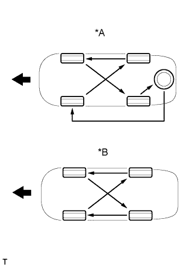
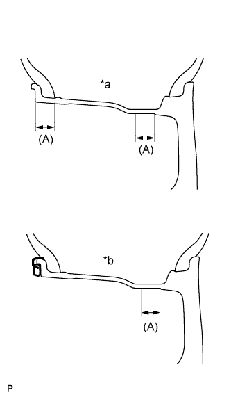

СИСТЕМА ШИН И ДИСКОВ > ПРОВЕРКА |
| 1. ПРОВЕРЬТЕ ШИНЫ |
Проверьте износ и давление накачки шин.
| Участок | Размер шин | Переднее кПа (кгс/см2, фунтов на кв. дюйм) | Заднее кПа (кгс/см2, фунтов на кв. дюйм) |
| Европа | 245/70R17 110S | 220 (2,2, 32) | 220 (2,2, 32) |
| 265/65R17 112S | 220 (2,2, 32) | 220 (2,2, 32) | |
| 265/60R18 110H | 220 (2,2, 32) | 220 (2,2, 32) | |
| Восточная Европа и Россия | 245/70R17 110S | 200 (2,0, 29) | 200 (2,0, 29) |
| 265/65R17 112S | 200 (2,0, 29) | 200 (2,0, 29) | |
| 265/60R18 110H | 200 (2,0, 29) | 200 (2,0, 29) | |
| Общая группа стран Австралия Страны Персидского залива | 245/70R17 110S | 200 (2,0, 29) | 200 (2,0, 29) |
| 265/65R17 112S | 200 (2,0, 29) | 200 (2,0, 29) | |
| 265/60R18 110H | 200 (2,0, 29) | 200 (2,0, 29) |
 |
С помощью индикатора часового типа проверьте биение шины.
| 2. ПОМЕНЯЙТЕ ШИНЫ МЕСТАМИ |
|  |
| *A | Для автомобилей с запасным колесом |
| *B | Для автомобилей без запасного колеса |
 | Передняя сторона |
| 3. ПРОВЕРЬТЕ БАЛАНСИРОВКУ КОЛЕС |
|  |
Проверьте и отрегулируйте балансировку вне автомобиля.
| *a | 265/60R18 110H |
| *b | 245/70R17 110S 265/65R17 112S |
При необходимости проверьте и отрегулируйте балансировку на автомобиле.
| 4. ПРОВЕРЬТЕ СТУПИЦУ ПЕРЕДНЕГО КОЛЕСА |
Проверьте ступицу переднего колеса (Нажмите здесь).
| 5. ПРОВЕРЬТЕ ВАЛ ЗАДНЕЙ ПОЛУОСИ |
Установите вал задней полуоси (Нажмите здесь).